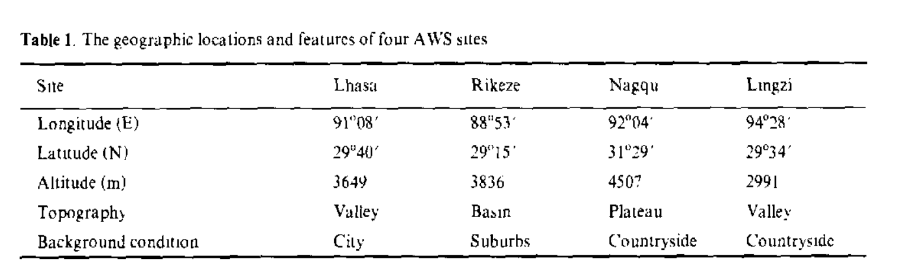
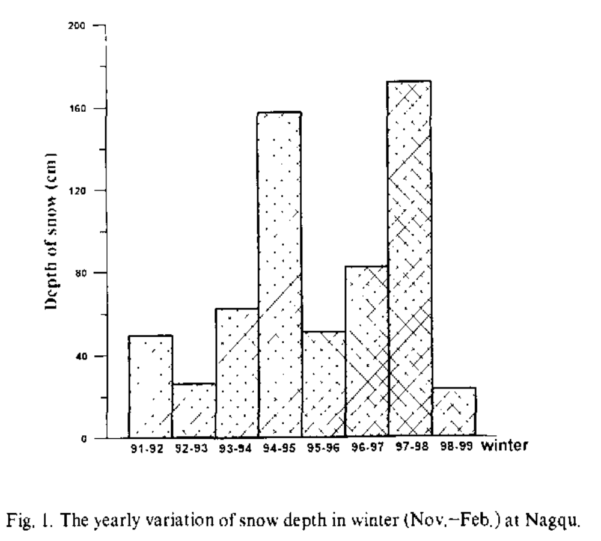
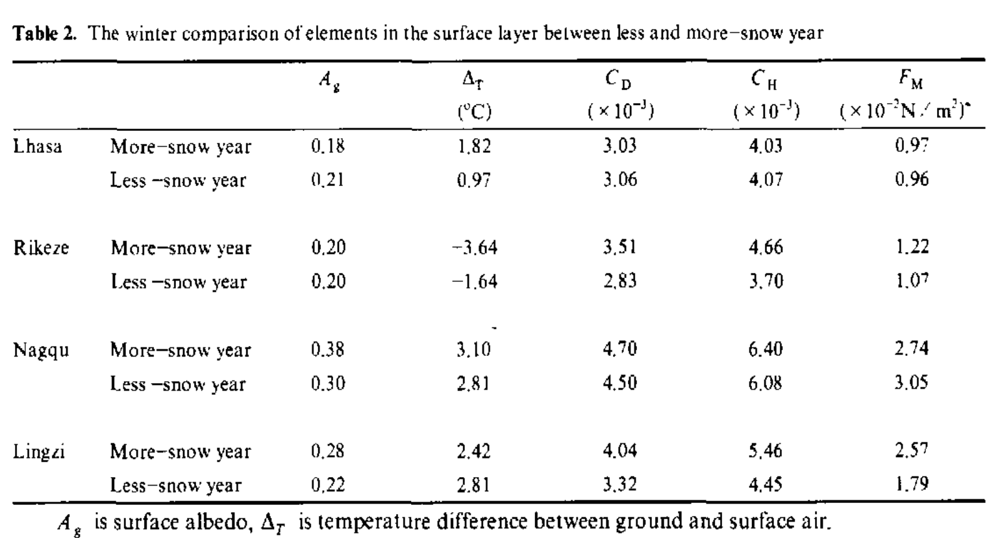
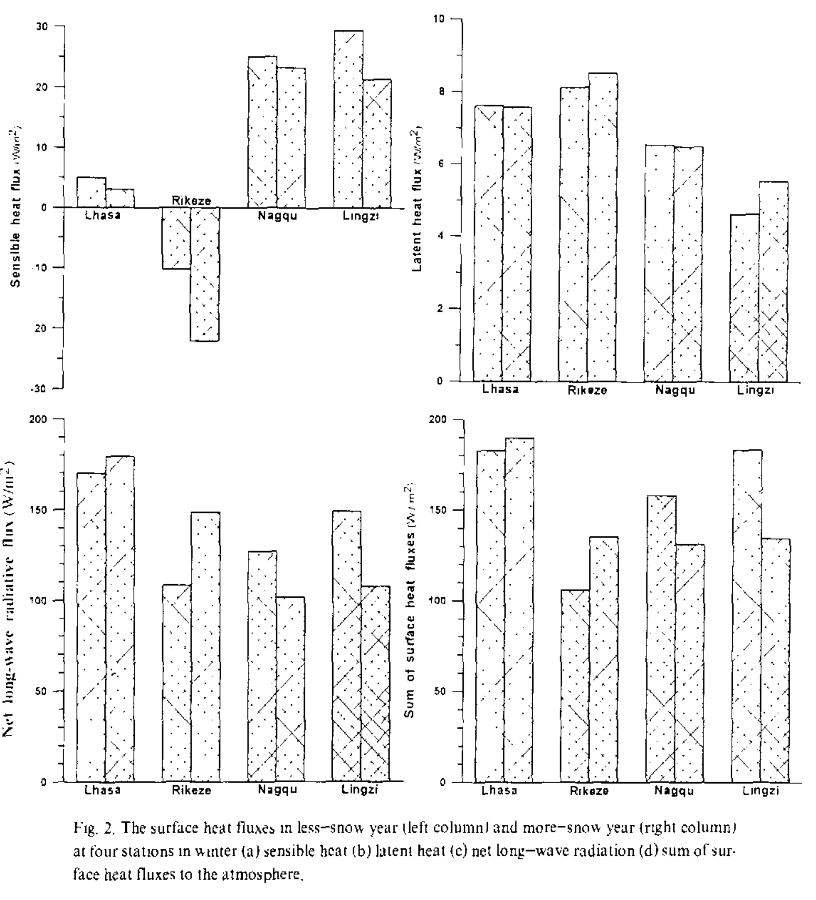
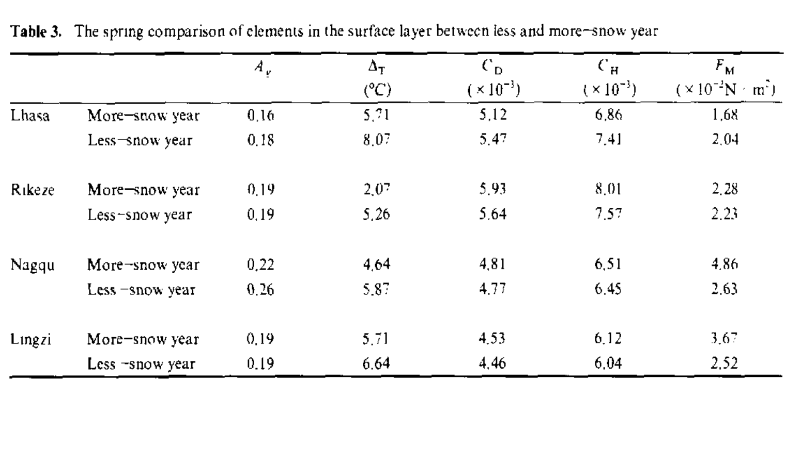
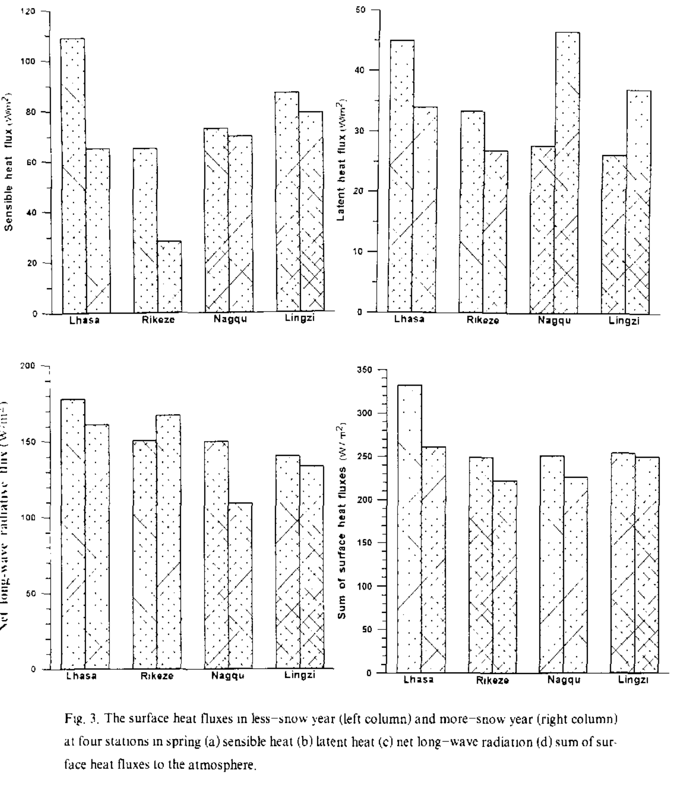

前置信息Front matter
青藏高原异常积雪对地表加热的影响
The Effects of Anomalous Snow Cover of the Tibetan Plateau on the Surface Heating
成都信息工程学院地球环境科学系，成都 610041
Department of Earth Environmental Sciences, Chengdu University of Information Technology, Chengdu 610041
河南省焦作市气象局，焦作 454151
Meteorological Bureau of Jiaozuo City of Henan Province, Jiaozuo 454151
西藏那曲气象局，那曲 852001
Meteorological Bureau of Nagqu of Tibet, Nagqu 852001
2000 年 8 月 7 日收稿；2001 年 1 月 12 日修订。
Received August 7, 2000; revised January 12, 2001.
本研究得到国家重点基础研究发展规划项目 G1998040900（I）、国家自然科学基金项目（40075018）及四川省青年科技基金资助。
This research was supported by the National Key Programme for Developing Basic Sciences G1998040900 (I), National Natural Science Foundation of China (40075018) and Sichuan Youth Science and Technology Fund.
摘要Abstract
摘要
ABSTRACT
基于近年来（1993—1999 年）在青藏高原获得的积雪资料和 AWS（自动气象站）资料，估算了感热、潜热和净长波辐射的特征，并对比分析了它们在多雪年（1997/1998）和少雪年（1996/1997）的变化。
On the basis of snow data and AWS (Automatic Weather Station) data obtained from the Tibetan Plateau in recent years (1993 to 1999), the features of sensible heat, latent heat and net long-wave radiations are estimated, and their variations in more-snow year (1997/1998) and less-snow year (1996/1997) are analyzed comparatively.
还讨论了青藏高原积雪与高原地面对大气加热之间的关系。
The relationships between snow cover of the Tibetan Plateau and plateau's surface heating to the atmospheric heating are also discussed.
多雪年与少雪年在春季的差异显著大于冬季。
The difference between more-snow and less-snow year in spring is remarkably larger than that in winter.
因此，冬季青藏高原异常积雪对高原加热的影响，会在异常积雪之后的春季表现得更加清楚。
Therefore, the effect of anomalous snow cover of the Tibetan Plateau in winter on the plateau heating appears more clearly in the following spring of anomalous snow cover.
关键词：青藏高原；积雪；影响；地表热通量
Key words: Tibetan Plateau, Snow cover, Effects, Surface heat fluxes
1. 引言1. Introduction
1. 引言
1. Introduction
众所周知，青藏高原对亚洲乃至全球气候有很大影响，而且青藏高原冬季积雪与中国夏季降水，尤其是长江流域降水之间存在良好关系（Li, 1996）。
It is known that the Asian and global climates are greatly affected by the Tibetan Plateau, and there is a good relationship between the winter snow cover over the Tibetan Plateau (Qinghai-Xizang Plateau) and the summer rainfall in China, especially in the Yangtze River (Changjiang River) valley (Li, 1996).
1997—1998 年冬季青藏高原的异常积雪，被认为是对 1998 年长江流域强降雨产生显著影响的重要个例之一（Li, 1999；Song, et al., 1999）。
The anomalous snow cover on the Tibetan Plateau during the winter season of 1997 to 1998 is regarded as one of the important cases that have some remarkable effects on the heavy rainfall in the Yangtze River valley in 1998 (Li, 1999; Song, et al., 1999).
中国于 1979 年 5—8 月开展了青藏高原气象科学试验（QXPMEX），取得了一些关于高原动力作用及其加热对大气环流和天气系统影响的重要成果。
Qinghai-Xizang Plateau Meteorological Science Experiment (QXPMEX) was carried out by China from May to August in 1979, some important results on the plateau dynamics and heating influence on the general circulation and weather systems were obtained.
然而，人们对地表过程及其气候反馈效应，尤其是与高原加热变化和陆气能量交换过程有关的方面，仍知之甚少。
However, the surface processes and their climatic feedback effects, especially those relating to the variation of plateau heating and the processes in air-land energy exchange are still little known.
本研究重点考察青藏高原冬季积雪对高原加热的影响。
In this study, the influence of winter snow cover on the Tibetan Plateau on the plateau heating is emphasized.
采用廓线—通量法确定整体输送系数，并用整体输送公式计算动量、感热和潜热的地表通量。
The bulk transfer coefficients are determined by the profile-flux method and the surface fluxes of momentum, sensible heat and latent heat are computed by the bulk transfer formulations.
所用大气近地层梯度观测资料取自 1993 年 7 月至 1999 年 3 月中国—日本亚洲季风机制合作研究项目（1993—1999）在青藏高原东部拉萨、那曲、林芝和日喀则设置的 AWS（自动气象站）；这些站点在 1998 年 5—8 月的 AWS 观测也属于 TIPEX（第二次青藏高原大气科学试验）的 IOP（强化观测期）。
The gradient observational data of the atmospheric surface layer were used from July 1993 to March 1999 obtained from AWS (Automatic Weather Station) installed in Lhasa, Nagqu, Lingzi and Rikeze on the Eastern Tibetan Plateau under the P.R. China-Japan Cooperation Research Project on Asian Monsoon Mechanism (1993–1999), the AWS observation in these stations is also a part of IOP (Intensive observational period) of TIPEX (The Second Tibetan Plateau Atmospheric Science Experiment) from May to August in 1998.
对少雪冬季（1996/1997）与多雪冬季（1997/1998）之间冬季及随后春季地表热通量的异常变化进行了对比分析。
The anomalous variations of surface heat fluxes in winter and the following spring between a less-snow winter (1996/1997) and a more-snow winter (1997/1998) are analyzed comparatively.
2. 资料与预处理2. Data and preprocessing
2. 资料与预处理
2. Data and preprocessing
AWS 观测资料来自拉萨、日喀则、那曲和林芝四个高原站（见表 1）。
The AWS observation data were obtained from four plateau stations at Lhasa, Rikeze, Nagqu and Lingzi (see Table 1).
观测要素包括
Observational elements include
（a）10 m、5 m（1995 年 6 月后该层改为 1.5 m）和 2.5 m 高度的风速；
(a) wind speed at 10 m, 5 m (this level was changed to 1.5 m after June 1995) and 2.5 m height,
（b）10 m 高度的风向；
(b) wind direction at 10 m height,
（c）10 m 高度的阵风风速；
(c) gusty wind speed at 10 m height,
（d）10 m 高度的相对湿度；
(d) relative humidity at 10 m height,
（e）10 m、5 m（1995 年 6 月后该层改为 1.5 m）和 2.5 m 高度的气温；
(e) air temperature at 10 m, 5 m (this level was changed to 1.5 m after June 1995) and 2.5 m height,
（f）降水；
(f) precipitation,
（g）地面气压；
(g) surface atmospheric pressure,
（h）辐射：总太阳辐射、向下总辐射、反射太阳辐射和向上总辐射；
(h) radiation: global solar radiation, downward total radiation, reflective solar radiation and upward total radiation,
（i）土壤温度（拉萨、日喀则和那曲为 0、4、8、16、32 和 80 cm；林芝为 0、1.25、2.5、5、10、20、40 和 80 cm）；
(i) soil temperature (0, 4, 8, 16, 32 and 80 cm at Lhasa, Rikeze and Nagqu or 0, 1.25, 2.5, 5, 10, 20, 40 and 80 cm at Lingzi),
（j）土壤湿度（0—15 cm 和 15—30 cm）。
(j) soil moisture (0–15 cm and 15–30 cm).
表 1. 四个 AWS 站点的地理位置与特征
Table 1. The geographic locations and features of four AWS sites

站点 | 拉萨 | 日喀则 | 那曲 | 林芝
经度（E）| 91°08′ | 88°53′ | 92°04′ | 94°28′
纬度（N）| 29°40′ | 29°15′ | 31°29′ | 29°34′
海拔（m）| 3649 | 3836 | 4507 | 2991
地形 | 河谷 | 盆地 | 高原 | 河谷
背景条件 | 城市 | 郊区 | 乡村 | 乡村
Site | Lhasa | Rikeze | Nagqu | Lingzi
Longitude (E) | 91°08′ | 88°53′ | 92°04′ | 94°28′
Latitude (N) | 29°40′ | 29°15′ | 31°29′ | 29°34′
Altitude (m) | 3649 | 3836 | 4507 | 2991
Topography | Valley | Basin | Plateau | Valley
Background condition | City | Suburbs | Countryside | Countryside
（a）—（h）由 AWS 的地上部分 AANDERAA 获取，1994 年 7 月以前资料采样间隔为 10 分钟，此后为 20 分钟；（i）—（j）由 AWS 的地下部分获取，该部分在 1995 年 7 月以前名为 LAND SCALE，此后名为 KADEC，资料时间间隔在 1994 年 7 月以前为半小时，自 1995 年 7 月起为一小时。
(a)–(h) are obtained from a part above ground of AWS named AANDERAA, the sampling interval of data is 10 minutes before July 1994 and 20 minutes since July 1994; (i)–(j) are obtained from a part under ground of AWS named LAND SCALE before July 1995 and named KADEC since July 1995, the time interval of data is half an hour before July 1994 and one hour since July 1995.
估算整体理查森数时，如果 AWS 未能正确采集 2.5 m 高度的风速和气温资料，则用 5 m 或 1.5 m 高度的同类观测要素替代，同时相应替换高度。
If the data of wind speed and temperature at 2.5 m are not collected correctly by AWS when bulk Richardson number is estimated, the same observed elements at 5 m or 1.5 m are chosen to replace, and the related heights are replaced meanwhile.
对 AWS 资料进行精度和可靠性检验，是本研究工作的保障。
The precision and reliability test of AWS data is the guarantee of the research work in this study.
成都气象学院的研究人员已将 1993 年 7—12 月的 AWS 资料与常规观测资料作了比较。
A comparison of the AWS data during the period of July to December 1993, with the routine observational data, has been done by the researchers in Chengdu Institute of Meteorology.
结果表明，本研究所用 AWS 资料的数值与变化趋势彼此一致，因此这些资料较为精确、可靠。
The results showed that the values and variation tendency of the AWS data used in this study are all in agreement with each other. Therefore they are comparatively precise and reliable.
此外，资料序列还表明 AWS 资料较为稳定，即各年的 AWS 资料不存在明显差异（Li et al., 1996）。
Moreover, the data sequence indicates that the AWS data are also stable, i.e. there is no obvious difference in the AWS data each year (Li et al., 1996).
本文所用 AWS 资料按如下方式预处理：依据观测报告，当仪器状态不佳时相应资料不能使用；参照青藏高原常规观测站气象要素的可能取值范围，滤除部分显著异常资料；除确定地表粗糙度长度外，计算前均按 GMT 对资料作日平均。
The AWS data used in this paper are preprocessed as follow: when the instrument is not in good condition according to observational reports, the data cannot be used, Some considerably anomalous data are filtered with the possible values of meteorological elements from the routine observation stations on the Tibetan Plateau, The data are averaged on daily basis according to GMT before the calculation except for the determination of the surface roughness length.
3. 计算方案3. Computational schemes
3. 计算方案
3. Computational schemes
3.1 整体输送系数
3.1 Bulk transfer coefficients
根据廓线—通量法，整体输送系数可表示为
According to the profile-flux method, the bulk transfer coefficients can be expressed as
（1）CD = k² / [ln(Z/Z0) − ψM(Z/L, Z0/L)]²。
(1) CD = k² / [ln(Z/Z0) − ψM(Z/L, Z0/L)]².
（2）CH = k² / {Pr0[ln(Z/Z0) − ψM(Z/L, Z0/L)][ln(Z/Z0) − ψH(Z/L, Z0H/L)]}。
(2) CH = k² / {Pr0[ln(Z/Z0) − ψM(Z/L, Z0/L)][ln(Z/Z0) − ψH(Z/L, Z0H/L)]}.
（3）CE = k² / {Pr0[ln(Z/Z0) − ψM(Z/L, Z0/L)][ln(Z/Z0) − ψE(Z/L, Z0E/L)]}。
(3) CE = k² / {Pr0[ln(Z/Z0) − ψM(Z/L, Z0/L)][ln(Z/Z0) − ψE(Z/L, Z0E/L)]}.
其中，CD、CH 和 CE 分别为动量、热量和水分的整体输送系数。
where CD, CH, and CE are the bulk transfer coefficients for momentum, heat and moisture, respectively.
k 为冯·卡门常数，取 0.4。
k is von Karman's constant, it is taken as 0.4.
Pr0（=0.74）为中性层结下的湍流普朗特数。
Pr0 (=0.74) is the turbulent Prandtl number for neutral stability.
ψM、ψH 和 ψE 是相应廓线函数从高度 Z0 到 Z 的积分结果。
ψM, ψH and ψE are the integration results involved profile functions with respective heights from Z0 to Z.
地表粗糙度长度 Z0、Z0H 和 Z0E 分别对应风速、温度和湿度。
The surface roughness lengths Z0, Z0H and Z0E correspond to wind speed, temperature and humidity, respectively.
为方便起见，粗略假定上述三个长度取值相等。
For convenience, the above three lengths are roughly assumed equal in value.
L 为莫宁—奥布霍夫稳定度参数，所用表达式为 ζ = Z/L。
L is Monin-Obukhov stability parameter, its applied expression is ζ = Z/L.
由于 ψE = ψH，通常假定 CE = CH。
Because ψE = ψH therefore it is usually assumed that, CE = CH.
稳定条件下，ψM 和 ψH 采用 Businger et al.（1971）建议的关系；不稳定条件下，采用 Paulson（1970）提出的表达式。
For stable conditions, ψM and ψH are taken from the relations suggested by Businger et al. (1971); for unstable conditions, the expressions proposed by Paulson (1970) are used.
稳定度参数 ζ 可表示为理查森数 Rib 的函数。
The stability parameter ζ can be expressed as a function of Richardson number Rib.
本文采用 Byun（1990）推导的一组解析显式解。
A set of analytical explicit solutions derived by Byun (1990) is used in this paper.
与通常的近似解相比，这些解同数值迭代法给出的估算结果符合得好得多，而且计算过程更简单。
These solutions showed a much better agreement on the estimation provided by a numerical iteration method than the usual approximation, and the procedure in computing these solutions is simpler.
在极端稳定条件（Z/L > 1，或 Rib > 0.125）下，应通过迭代过程确定稳定度参数 ζ，以得到合理的 CD 和 CH 值。
For extreme stable conditions (Z/L > 1, or Rib > 0.125), the stability parameter ζ should be determined by using an iterative procedure to obtain the reasonable values of CD and CH.
地表粗糙度长度 Z0 是计算整体输送系数和地表通量的重要参数之一。
The surface roughness length Z0 is one of the important parameters to calculate the bulk transfer coefficients and surface fluxes.
由于地表相似理论不适用于弱风，因此选取强风条件（例如 10 m 高度风速超过 5 m/s）和近中性条件（即在中性条件下，整体理查森数的绝对值不大于本文取为 0.0002 的判据）下的资料，再利用上述 10 m、5 m（或 1.5 m）和 2.5 m 高度风速资料，按对数风速律以最小二乘法计算地表粗糙度长度 Z0（Li et al., 1999）。
As the surface similarity theory is not appropriate for weak wind, the data under strong wind (e.g. above 5 m/s at 10 m height) and for near-neutral condition (i.e. for neutral condition, the absolute value of bulk Richardson number is not larger than a criterion which is taken as 0.0002 in this paper), then the surface roughness length Z0 is calculated by the above-chosen data of wind speed at 10 m, 5 m (or 1.5 m) and 2.5 m heights from a logarithmic wind law using the least square method (Li et al., 1999).
3.2 地表通量估算
3.2 Estimation of the surface fluxes
根据整体输送理论，动量、感热和潜热（蒸发）地表通量可分别表示为
According to the bulk transfer theory, the surface flux of momentum, sensible heat and latent heat (evaporation) can be respectively expressed as
（4）FM = ρCDU²。
(4) FM = ρCDU².
（5）FH = ρCpCHU(Tg − T)。
(5) FH = ρCpCHU(Tg − T).
（6）FL = ρβLECEU(qgs − q)。
(6) FL = ρβLECEU(qgs − q).
其中，ρ 为空气密度，本文将其表示为海拔高度的指数递减函数。
where ρ is air density and is expressed as an exponential descending function of the sea level elevation in this paper.
Tg 为地面（0 cm）温度，qgs 为温度 Tg 下地面的饱和比湿；为获得良好代表性，风速和气温也取最高高度（10 m）的相应值。
Tg is temperature on the ground (0 cm), qgs is saturation specific humidity on the ground at Tg, wind speed and temperature of air are also taken as the corresponding values at the highest height (10 m) for a good representation.
β 为水分可利用系数或蒸发常数，是土壤湿度的递增函数。
β is moisture availability factor or evaporation constant, it is an ascending function of soil moisture.
该系数由土壤湿度观测资料估算，优于间接依据空气相对湿度的方法。
This factor is estimated by the observational data of soil moisture, which is better than the method based upon relative air humidity indirectly.
于是得到如下参数化方法（Li et al., 2000）
Then we have the following parameterization method (Li et al., 2000)
（7）β = (W̄ − Wec)/(Wsat − Wec)。
(7) β = (W̄ − Wec)/(Wsat − Wec).
其中，W̄ 为两层土壤相对湿度的平均值。
where W̄ is the mean of relative soil moisture in two layers of soil.
Wsat 为饱和土壤湿度的平均值。
Wsat is the mean of saturated soil moisture.
Wec 是满足土壤蒸发需求的判据，由土壤接近冻结或解冻时的土壤湿度观测资料确定。
Wec is a criterion for meeting the demands of soil evaporation and is determined by the observational data of soil moisture when soil is close to freezing or unfreezing.
Wsat 为上层土壤（0—30 cm）饱和土壤湿度的平均值，取自日本气象厅气象研究所 Shigenori Haginoya 博士的测量结果（通过私人邮件获得）。
Wsat is the mean of saturated soil moisture in the upper soil (0–30 cm) and is taken from the measurement by Dr. Shigenori Haginoya in Meteorological Research Institute, Meteorological Agency of Japan (through the private mail).
4. 分析与讨论4. Analysis and discussion
4. 分析与讨论
4. Analysis and discussion
4.1 分析方法与异常积雪年份的选择
4.1 Analysis method and choice of anomalous snow cover year
20 世纪 80 年代以来，青藏高原积雪时间序列呈波动型变化。
The time series of snow cover on the Tibetan Plateau appears a wave-type variation since the 1980's.
为便于分析青藏高原积雪对地表过程的影响，根据青藏高原积雪资料及相关气候资料，选择了两个典型的异常积雪年份（或冬季）。
For convenience to analyze the effect of snow cover of the Tibetan Plateau on the surface processes, two typical anomalous snow cover years (or winters) were chosen according to the snow data and related climate data from the Tibetan Plateau.
1997 年（1996—1997 年冬季）为异常少雪年，而 1998 年（1997—1998 年冬季）为异常多雪年（如图 1 所示；应指出，那曲的图 1 只是在一定程度上代表整个青藏高原）。
The year 1997 (winter from 1996 to 1997) is an abnormally less-snow year, whereas 1998 (winter from 1997 to 1998) is an abnormal more-snow year (as shown in Fig. 1, it should be pointed out that Fig. 1 at Nagqu is only a representative of the whole Tibetan Plateau to a certain extent).

图 1. 那曲冬季（11 月—2 月）雪深的逐年变化。
Fig. 1. The yearly variation of snow depth in winter (Nov.–Feb.) at Nagqu.
4.2 少雪年与多雪年近地层要素的差异
4.2 The difference of elements in the surface layer between less-snow year and more-snow year
4.2.1 冬季
4.2.1 Winter
表 2 表明，多雪年那曲和林芝的地表反照率显著增大，而拉萨和日喀则并非如此；这说明青藏高原降雪分布很不规则，且多雪异常在那曲和林芝尤为显著。
Table 2 shows that surface albedo increases remarkably at Nagqu and Lingzi in more-snow year, but not at Lhasa and Rikeze, this indicates that distribution of snowfall on the Tibetan Plateau is highly erratic, and the anomaly of more snow is remarkably at Nagqu and Lingzi.
除拉萨和那曲外，多雪冬季地面与近地面空气之间的温差均减小。
The temperature difference between ground and surface air drops in the more-snow winter except Lhasa and Nagqu.
除拉萨外，动量和热量的整体输送系数均有不同程度增大，这主要由不稳定条件增加所致。
The bulk transfer coefficients for momentum and heat increase in varying degrees except Lhasa which is mainly caused by a rise of unstable conditions.
地表动量通量不仅取决于动量整体输送系数，也取决于地面风速，因此该通量在少雪年与多雪年之间的差异因站而异。
Surface momentum flux not only depends on bulk transfer coefficient of momentum but also surface wind speed, therefore the difference of this flux between less-snow year and more-snow year is not the same at each station.
图 2a 中，多雪年感热通量大幅减小（尤其在日喀则），这主要取决于地面与近地面空气温差的下降。
In Fig. 2a, the sensible heat flux decreases to a great extent in more-snow year (especially at Rikeze), which mainly depends on the drop of temperature difference between ground and surface air.
由于冬季土壤趋于冻结，多雪年的蒸发潜热通量与少雪年几乎相同。
The latent heat flux of evaporation in the more-snow year is almost the same as the less-snow year because the soil tends to freeze in winter.
地面对大气直接加热的方式是感热和净长波辐射，其中后者对此贡献最大。
The direct ways in which the surface heats the atmosphere are sensible heat and net long-wave radiation, and the latter has the greatest contribution in this regard.
在积雪异常显著的站点，例如那曲和林芝，净长波辐射在多雪冬季明显减小。
It decreases obviously in more-snow winter at station where the snow cover is remarkably anomalous, for example at Nagqu and Lingzi.
总之，多雪年这些异常显著站点的地表加热明显减弱，但其他站点（如拉萨和林芝）的地表加热增强。
In summary, the surface heating in more-snow year decreases remarkably at these obviously anomalous stations, but increases at other stations (such as Lhasa and Lingzi).
因此，冬季多雪年相对于少雪年的地表加热变化在各站并不一致（如图 2d 所示）。
Then the variations of the surface heating in more-snow year comparing to the less-snow year are not identical at each station in winter (as shown in Fig. 2d).
表 2. 少雪年与多雪年冬季近地层要素的比较
Table 2. The winter comparison of elements in the surface layer between less and more-snow year

列：站点/年份 | Ag | ΔT（°C）| CD（×10⁻³）| CH（×10⁻³）| FM（×10⁻² N/m²）
拉萨，多雪年 | 0.18 | 1.82 | 3.03 | 4.03 | 0.97
拉萨，少雪年 | 0.21 | 0.97 | 3.06 | 4.07 | 0.96
日喀则，多雪年 | 0.20 | −3.64 | 3.51 | 4.66 | 1.22
日喀则，少雪年 | 0.20 | −1.64 | 2.83 | 3.70 | 1.07
那曲，多雪年 | 0.38 | 3.10 | 4.70 | 6.40 | 2.74
那曲，少雪年 | 0.30 | 2.81 | 4.50 | 6.08 | 3.05
林芝，多雪年 | 0.28 | 2.42 | 4.04 | 5.46 | 2.57
林芝，少雪年 | 0.22 | 2.81 | 3.32 | 4.45 | 1.79
Columns: station/year | Ag | ΔT (°C) | CD (×10⁻³) | CH (×10⁻³) | FM (×10⁻² N/m²)
Lhasa, More-snow year | 0.18 | 1.82 | 3.03 | 4.03 | 0.97
Lhasa, Less-snow year | 0.21 | 0.97 | 3.06 | 4.07 | 0.96
Rikeze, More-snow year | 0.20 | −3.64 | 3.51 | 4.66 | 1.22
Rikeze, Less-snow year | 0.20 | −1.64 | 2.83 | 3.70 | 1.07
Nagqu, More-snow year | 0.38 | 3.10 | 4.70 | 6.40 | 2.74
Nagqu, Less-snow year | 0.30 | 2.81 | 4.50 | 6.08 | 3.05
Lingzi, More-snow year | 0.28 | 2.42 | 4.04 | 5.46 | 2.57
Lingzi, Less-snow year | 0.22 | 2.81 | 3.32 | 4.45 | 1.79
Ag 为地表反照率，ΔT 为地面与近地面空气之间的温差。
Ag is surface albedo, ΔT is temperature difference between ground and surface air.

图 2. 冬季四个站点少雪年（左柱）和多雪年（右柱）的地表热通量：（a）感热；（b）潜热；（c）净长波辐射；（d）对大气的地表热通量之和。
Fig. 2. The surface heat fluxes in less-snow year (left column) and more-snow year (right column) at four stations in winter (a) sensible heat (b) latent heat (c) net long-wave radiation (d) sum of surface heat fluxes to the atmosphere.
4.2.2 春季
4.2.2 Spring
由于积雪具有持续性和滞后效应，青藏高原冬季异常积雪不仅影响冬季地表过程，也影响春季这些过程的特征及大气环流。
The anomalous snow cover of the Tibetan Plateau in winter influences not only the surface processes in winter but also the features of these processes and the general circulation in spring due to the persistence and time-lag effect of snow cover.
春季随着气温升高，积雪开始融化。
In spring, snow cover is beginning to thaw with rising air temperature.
表 3 中，多雪年的地表反照率减小，甚至低于少雪年，这是因为融雪使土壤湿度增加。
In Table 3, the surface albedo of more-snow year decreases and is even lower than that of less-snow year, because the soil moisture increases due to melting snow.
多雪年春季的温差仍然减小，其均匀性和变率大于冬季。
The temperature difference of more-snow year in spring still decreases, its uniformity and variability is larger than that in winter.
表 3. 少雪年与多雪年春季近地层要素的比较
Table 3. The spring comparison of elements in the surface layer between less and more-snow year

列：站点/年份 | Ag | ΔT（°C）| CD（×10⁻³）| CH（×10⁻³）| FM（×10⁻² N/m²）
拉萨，多雪年 | 0.16 | 5.71 | 5.12 | 6.86 | 1.68
拉萨，少雪年 | 0.18 | 8.07 | 5.47 | 7.41 | 2.04
日喀则，多雪年 | 0.19 | 2.07 | 5.93 | 8.01 | 2.28
日喀则，少雪年 | 0.19 | 5.26 | 5.64 | 7.57 | 2.23
那曲，多雪年 | 0.22 | 4.64 | 4.81 | 6.51 | 4.86
那曲，少雪年 | 0.26 | 5.87 | 4.77 | 6.45 | 2.63
林芝，多雪年 | 0.19 | 5.71 | 4.53 | 6.12 | 3.67
林芝，少雪年 | 0.19 | 6.64 | 4.46 | 6.04 | 2.52
Columns: station/year | Ag | ΔT (°C) | CD (×10⁻³) | CH (×10⁻³) | FM (×10⁻² N/m²)
Lhasa, More-snow year | 0.16 | 5.71 | 5.12 | 6.86 | 1.68
Lhasa, Less-snow year | 0.18 | 8.07 | 5.47 | 7.41 | 2.04
Rikeze, More-snow year | 0.19 | 2.07 | 5.93 | 8.01 | 2.28
Rikeze, Less-snow year | 0.19 | 5.26 | 5.64 | 7.57 | 2.23
Nagqu, More-snow year | 0.22 | 4.64 | 4.81 | 6.51 | 4.86
Nagqu, Less-snow year | 0.26 | 5.87 | 4.77 | 6.45 | 2.63
Lingzi, More-snow year | 0.19 | 5.71 | 4.53 | 6.12 | 3.67
Lingzi, Less-snow year | 0.19 | 6.64 | 4.46 | 6.04 | 2.52

图 3. 春季四个站点少雪年（左柱）和多雪年（右柱）的地表热通量：（a）感热；（b）潜热；（c）净长波辐射；（d）对大气的地表热通量之和。
Fig. 3. The surface heat fluxes in less-snow year (left column) and more-snow year (right column) at four stations in spring (a) sensible heat (b) latent heat (c) net long-wave radiation (d) sum of surface heat fluxes to the atmosphere.
少雪年与多雪年之间动量和热量整体输送系数在春季的变化与冬季相同。
The variation of the bulk transfer coefficient for momentum and heat in spring between less-snow and more-snow year is the same as in winter.
图 3 表明，少雪年与多雪年之间的感热通量差异在春季非常明显，且大于冬季，拉萨和日喀则尤为如此。
In Fig. 3, the difference of sensible heat flux between less-snow and more-snow year is very prominant in spring and is larger than that in winter, especially at Lhasa and Rikeze.
四个站点的变化趋势也一致。
The tendency of all the four stations is also the same.
春季由于融雪使土壤湿度和土壤蒸发增加，多雪年的潜热通量随之增大，在积雪异常显著的站点（如那曲和林芝）尤其如此。
The latent heat flux of more-snow year in spring increases with a rise of soil moisture and soil evaporation due to melting snow especially at stations where the snow cover is remarkably anomalous (such as Nagqu and Lingzi).
春季除日喀则外，多雪年的净长波辐射均明显减小。
In spring, the net long-wave radiation obviously decreases in more-snow year except Rikeze.
因而四个站点对大气的热通量之和均明显减小（见图 3d），且多雪年与少雪年在春季的差异显著大于冬季。
Then the sum of heat fluxes to the atmosphere obviously decreases at four stations (see Fig. 3d), and the difference between more-snow and less-snow year in spring is remarkably larger than that in winter.
因此，冬季青藏高原异常积雪对高原加热的影响，会在异常积雪之后的春季表现得更加清楚。
Therefore, the effects of anomalous snow cover of the Tibetan Plateau in winter on the plateau heating appear more clearly in the following spring of anomalous snow cover.
5. 结语5. Concluding remarks
5. 结语
5. Concluding remarks
通过比较青藏高原多雪年与少雪年，计算并分析了若干近地层要素。
Comparing more-snow year to less-snow year of the Tibetan Plateau, some elements of surface layer are calculated and analyzed.
详细展示并讨论了这些要素的特征，尤其是积雪异常时地面对大气的加热特征。
The characteristics of these elements, especially surface heating to the atmosphere when snow cover is anomalous, are shown and discussed in detail.
本研究的主要目标是概念性的，所得结果将有助于深入研究青藏高原地表过程及其变化对中国和周边地区天气、气候波动的影响。
The main objective of this study is conceptual, the results obtained would be helpful to study deeply the surface processes on the Tibetan Plateau and effects of their variations on the fluctuations in weather and climate of China and surrounding regions.
但需要指出，部分 AWS 资料仍应进一步核查，例如土壤湿度和长波辐射资料。
However, it is noted that some AWS data should be checked further, such as soil moisture and long-wave radiation.
还需要定量研究异常积雪对高原地面对大气加热的影响，而异常积雪的气候效应可能与大气环流密切相关。
The influence of anomalous snow cover on the plateau's surface heating to the atmosphere is also to be investigated in quantitative terms, and the climate effect of anomalous snow cover may be closely related with the general circulation.
因此，有必要开展广泛研究，并可集中考察上述问题。
Therefore, extensive research studies are necessary and may be concentrated on the problems described above.
参考文献后的中文后置材料Chinese back matter after References
题为“REFERENCES”的参考文献表不作翻译；其后原文所印的中文标题、摘要和关键词仍纳入下列范围。
The bibliography headed REFERENCES is excluded from translation; the original Chinese title, abstract and keywords printed after it remain in scope below.
青藏高原积雪异常对高原地面加热的影响
Influence of Anomalous Tibetan Plateau Snow Cover on Plateau Surface Heating
摘 要
Abstract
利用青藏高原积雪资料和中日亚洲季风机制合作研究在 1993～1999 年获得的自动气象站观测资料，计算了地面感热、潜热和净长波辐射，并对比分析了这些物理量在一个多雪年（1997／1998）和一个少雪年（1996／1997）的变化。
Using Tibetan Plateau snow-cover data and automatic weather station observations obtained in 1993–1999 under the China–Japan Cooperative Research Project on the Asian Monsoon Mechanism, surface sensible heat, latent heat and net long-wave radiation were calculated, and the changes in these physical quantities in a more-snow year (1997/1998) and a less-snow year (1996/1997) were comparatively analyzed.
关于青藏高原积雪与高原地面加热关系的讨论表明：多雪年和少雪年在接下来的春季里的差别明显大于冬季，因而在冬季发生的青藏高原积雪异常的效应在接下来的春季会表现得更加强烈。
Discussion of the relationship between Tibetan Plateau snow cover and plateau surface heating shows that the difference between more-snow and less-snow years in the following spring is markedly greater than in winter; consequently, the effect of Tibetan Plateau snow-cover anomalies occurring in winter becomes stronger in the following spring.
关键词：青藏高原，积雪，影响，地面热通量
Key words: Tibetan Plateau, snow cover, influence, surface heat fluxes